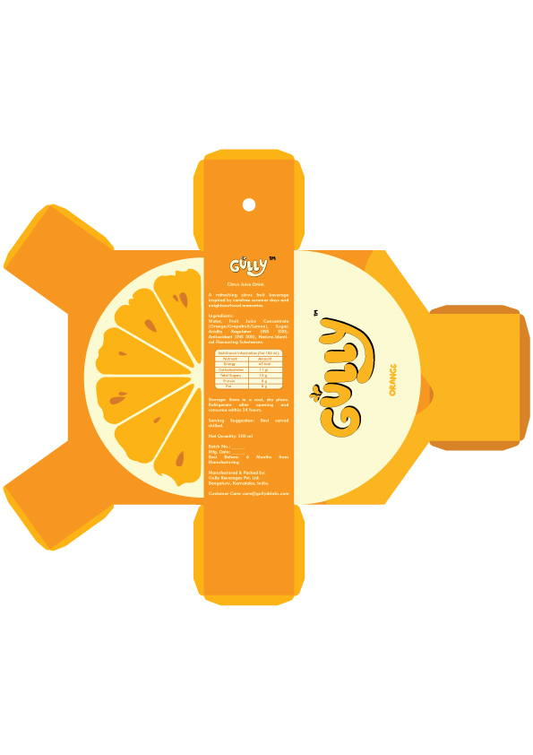
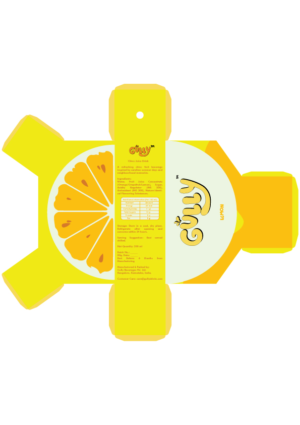

PROJECT / BEVERAGE PACKAGING DESIGN
Tetrapak Packaging Design

A bright citrus juice carton design system for Gully, with coordinated grapefruit, orange, and lemon flavor variations.
Packaging designs


About the project
This packaging series develops a consistent carton layout across three citrus flavors. Flavor-specific colors and fruit illustrations distinguish grapefruit, orange, and lemon while keeping the Gully identity unified across the range.